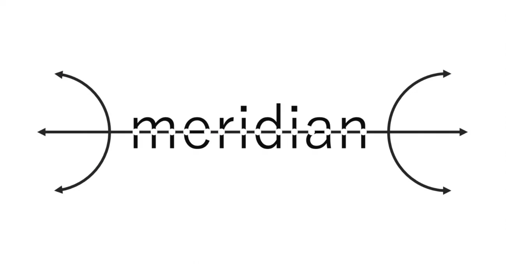

Getting Started

"Meridan"はヒューマノイドロボットの制御や開発を円滑にするためのオープンソースプロジェクトです。
すでに浸透している既存のハードウェアやルール、多く利用されているソフトウェアに準じながらそれらをつなぎ合わせる"経絡"となる仕組みを用意することで、既存製品にはない柔軟性の高いシステム構成や開発環境をつくっていきます。じわじわとつくってきます。
これまでの開発経緯についてはNoteのページをご覧ください。
Meridian計画 目次